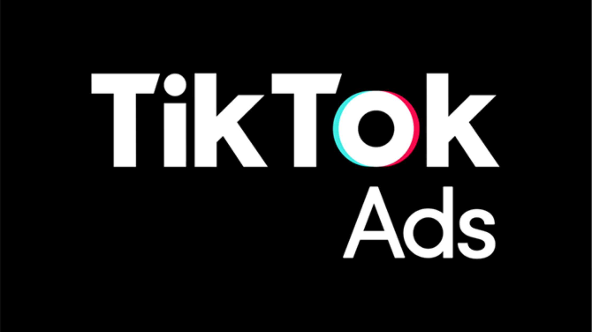

Introduction of TikTok Ads
TikTok Ads is the latest and easiest method of advertisement. Nowadays, many advertisers spend their amounts here and run ads for their products. The young generation mostly uses TikTok, and many young people around the world engage with the platform. In Pakistan, a significant number of users under 18 also use TikTok.
TikTok Ads
TikTok Ads is the latest and easiest method of advertisement. Nowadays, many advertisers spend their amounts here and run ads for their products. The young generation mostly uses TikTok, and many young people around the world engage with the platform. In Pakistan, a significant number of users under 18 also use TikTok.
Most of the ads on TikTok promote items that are used in people's daily lives, including clothing and home appliances. TikTok is used by ordinary people and often by their own will, which makes its ads relatable. TikTok detects people's preferences and displays ads according to those preferences.
Running an ad on TikTok is very easy. The advertiser has to pay a certain amount of money to TikTok, and then TikTok runs a campaign for their ad for a specific time. Most people look at the "For You" page, where they can buy the things they want. The biggest advantage of being on the "For You" page is that it generates a significant amount of traffic, consisting of active users currently using TikTok. This way, ads can move to the trending page. People who are currently active on TikTok can see what they want in these ads, and if they like it, they can immediately purchase it from the website linked in the ad.
Types of Ads Usually Shown on TikTok:
- Clothing Ads
- Jewelry Ads
- Home Appliances Ads
- Online Services Ads
- Shoes Ads
- Courses Ads
Benefits of TikTok Ads:
- It generates a large number of customers for advertisers.
- It increases the sales of advertisers.
- It helps people buy things conveniently at their doorstep.
TikTok Ads Link:
https://ads.tiktok.com/i18n/home
When Was It Introduced?
2019.
Using TikTok Ads for Business Growth
TikTok has become a powerhouse in the world of advertising, offering businesses unique ways to connect with audiences and promote their products. If you’re looking to grow your client base, create eye-catching ads, or outshine competitors, TikTok is the place to catch clients. Here’s how you can use TikTok ads to your advantage for brand promotion and make money.
1. How to Get More Clients with the Use of TikTok Ads
TikTok’s active user base provides a golden opportunity to attract new customers, but you need to approach it strategically:
- Know Your Audience: TikTok’s targeting tools allow you to focus on specific demographics, interests, and behaviors. Understand who your ideal customer is and tailor your ads to engage them.
- Join the Trends: Use popular hashtags, songs, or challenges to make your ads feel like a natural part of the platform. When your ad blends in with trending content, it’s more likely to catch attention.
- Add Clear CTAs: A strong Call-to-Action (CTA) encourages viewers to take the next step. Use phrases like “Shop Now” or “Try it Today” to guide users toward your product or service.
- Partner with Influencers: Collaborate with TikTok influencers who have built trust with their followers. They can showcase your product in authentic ways that drive engagement and sales.
- Test and Learn: Use TikTok’s built-in analytics to see how your ads are performing. Experiment with different approaches, tweak what isn’t working, and stick to what resonates with your audience.
2. How to Make Your TikTok Ads More Attractive
To stand out in TikTok’s fast-paced feed, your ads need to grab attention immediately:
- Hook Them Early: The first few seconds are crucial. Start with something bold—a bright color, surprising text, or a question that sparks curiosity.
- Keep It Real: TikTok users appreciate authentic content. Your ads don’t need to look like a Hollywood production. Focus on relatable, real-life scenarios that show how your product fits into everyday life.
- Add Great Visuals and Music: High-quality videos and trending music tracks can make your ad pop. TikTok’s library offers plenty of sound options to match the mood of your ad.
- Tell a Story: People connect with stories, not sales pitches. Show how your product solves a problem or makes life better through a quick, relatable narrative.
- Use Text and Effects: Short captions, animated overlays, or subtle effects can make your key message stand out. Keep it simple and clear.
- Try Different Formats: TikTok offers various ad styles like In-Feed Ads, TopView Ads, and Branded Challenges. Experiment with them to see what works best for your brand.
3. Why TikTok Ads Are Better Than Other Platforms
When it comes to advertising your brand, TikTok offers unique benefits that make it stand out from other platforms:
- Reach Younger Audiences: If your target market includes Gen Z or millennials, TikTok is where you’ll find them. With over 1 billion active users, it’s a platform with incredible reach.
- High Engagement Levels: TikTok users spend an average of 95 minutes per day on the app. This high engagement means your ads are more likely to be seen and interacted with.
- Creative and Fun Ad Options: TikTok offers interactive ad formats like Branded Hashtag Challenges and In-Feed Ads that get users involved. This isn’t something you’ll find on most other platforms.
- Cost-Effective Advertising: TikTok ads are often more affordable than other platforms, with lower costs per click and better return on investment. This makes it a great choice for businesses on a budget.
- Trend-Based Virality: TikTok’s trend-driven nature gives brands the chance to go viral. A single trending ad or challenge can reach millions without additional spending.
- Stronger User Connections: TikTok ads don’t just promote; they engage users. Challenges, duets, and interactive content foster a sense of community, making users feel more connected to your brand.